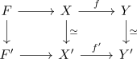

weak homotopy equivalence between fibration sequences induces weak equivalence on fibres
Proposition
Let

be a diagram, where
- $f,f'$ are serre fibrations
- the middle and right vertical maps are weak homotopy equivalences
Then so is the induced map on fibres